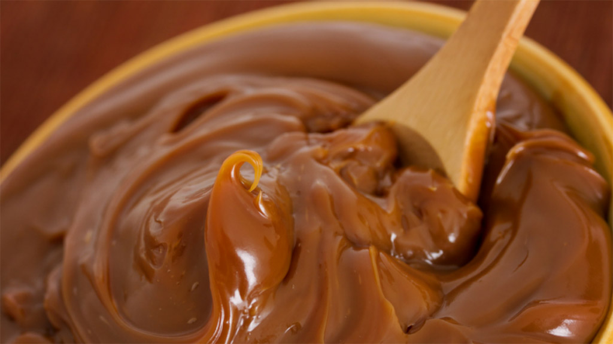

Dulce de Leche

Description
Dulce de Leche is similar to caramel and comes from sweetened milk, such as condensed milk. When heated, the sugar in the milk becomes caramelized and transforms into that sweet golden-brown color with deeply decadent flavor.
Ingredients
- 4 cups (32oz/1000ml) milk
- 1 ¼ cups ((10oz/300g) sugar
- teaspoon vanilla
Steps
- Stir together milk and sugar in a heavy bottomed saucepan.
- Bring to a boil, then reduce heat and simmer uncovered, stirring occasionally, until caramelized and thickened, about 1 1/2 to 1 3/4 hours. (skim away any foam that forms during simmering)
- After about an hour, stir more often as milk caramelizes, to avoid burning.
- Remove from the heat and stir in vanilla extract.
- Transfer to a bowl to cool. Makes about 1 1/2 cups.
Back to index